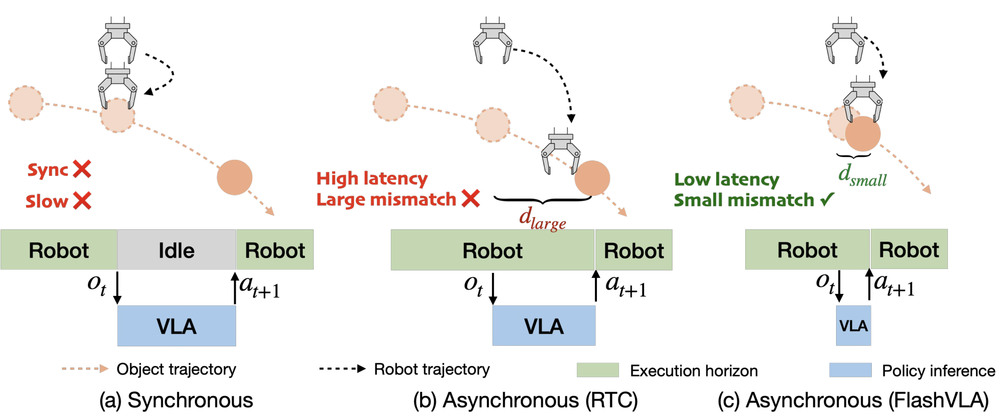
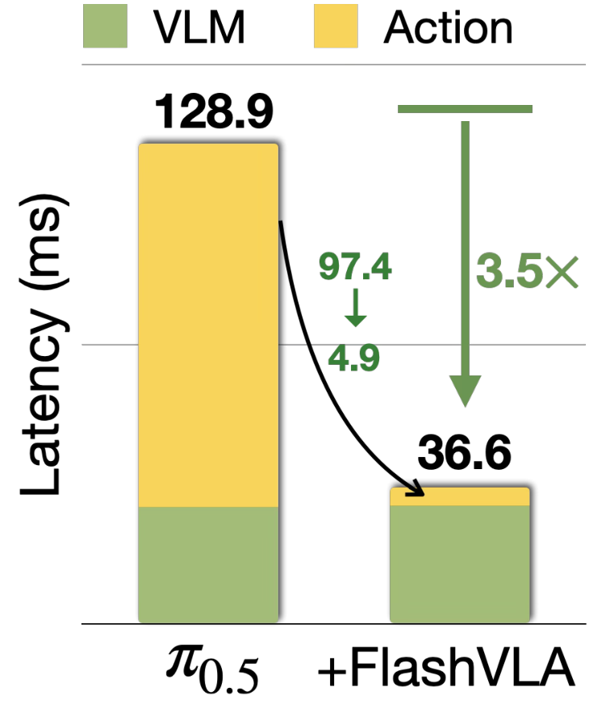
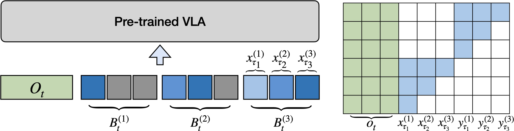
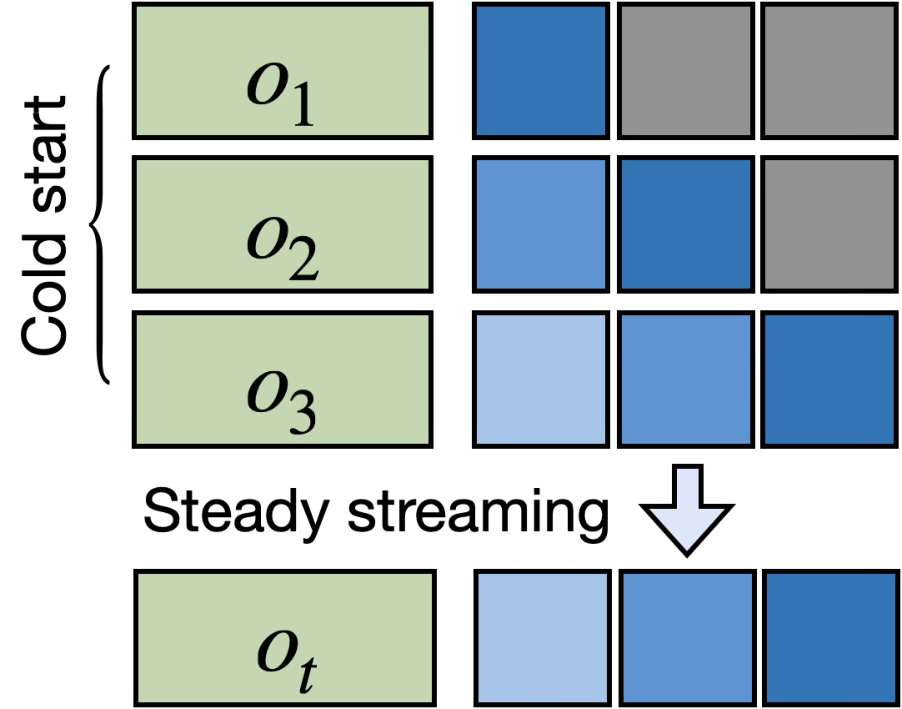

VLA의 action decoding이 추론 시간의 75%를 잡아먹는다는 프로파일에서 출발. FlashVLA는 서로 다른 노이즈 레벨의 N개 action chunk를 버퍼에 두고, chunk-wise causal attention으로 한 forward에 각 chunk를 한 스텝씩 정제한다. 결과: 매 inference마다 실행 가능한 chunk 하나가 뽑히고, 미래 상태 예측기 없이도 asynchronous 실행이 가능해진다. LIBERO 96.9→97.8, per-step latency 53.8→22.1ms(2.43×), RoboTwin 2.0 long-horizon 53.0→89.6%, 실 Franka 84.4% vs sync 80.0%. RTX 4090으로 ≥30 Hz 제어 실현.
1배경 · 문제의식
기존 VLA는 관찰 → 완전한 action chunk 하나를 동기적으로 생성 → 실행 → 새 관찰. 이 방식엔 두 문제: (a) chunk 생성이 오래 걸려 실시간성 저하(π₀.₅ 프로파일 상 action decoding이 추론 시간의 75%), (b) chunk 실행 도중 새 관찰이 들어와도 반영할 수 없어 비동기 mismatch 발생. 저자들은 "여러 chunk를 다른 노이즈 레벨로 버퍼에 두면 forward 한 번에 모두 한 스텝씩 정제되고, 앞쪽은 곧 실행 가능"이라는 streaming decoding으로 두 문제 동시에 해결.
직관: 요리 3단계를 순서대로 하나씩 완성해 낼 게 아니라, 3단계를 동시에 조금씩 진행시켜 앞 단계가 완성될 때 뒤 단계는 이미 절반쯤 준비돼 있게 하는 파이프라인. 게다가 뒤 단계(미완성 chunk)는 앞 단계(먼저 실행되는 chunk)를 참조하도록 attention을 걸어, 자동으로 "앞으로 실행될 궤적에 조건부"가 된다.
2핵심 Contribution
Streaming action buffer — N개 chunk를 서로 다른 노이즈 레벨 τ₁ < τ₂ < ... < τₙ으로 유지. 한 forward에 모든 chunk를 한 denoising step씩 전진 → 매 스텝 첫 슬롯의 chunk가 실행 준비 완료.
Chunk-wise causal attention — 노이지한(뒤쪽) chunk는 클린한(앞쪽) chunk에만 attend. 이 마스크만으로 "미래 chunk가 곧 실행될 궤적에 자동으로 조건부"라는 implicit asynchronous conditioning이 성립해 별도 future-state predictor 불필요.
Multi-buffer joint fine-tuning — 하나의 관찰에 대해 N개 버퍼 상태를 한 학습 샘플에 packing하되 attention mask는 분리, 사전학습 VLA를 효율적으로 어댑트.
실시간 배포 실증 — RTX 4090/5090/A4000에서 ≥30 Hz 제어, 실 Franka에서 sync 대비 성공률↑·완료시간 1.3× 단축.
3Method
기존 방식의 한계
표준 VLA(예: π₀·π₀.₅)는 flow matching으로 chunk 하나(예: 10 스텝짜리 action)를 만드는 데 여러 denoising step이 필요하고, 이 chunk가 완전히 만들어질 때까지 로봇이 대기. 그 사이 새 관찰이 들어오면 버려지거나 stale conditioning 상태로 실행.
Streaming Buffer — 어떻게 동작하나
버퍼에는 N개 슬롯이 있고 각 슬롯은 한 action chunk를 담는다. 슬롯 1은 거의 클린(τ₁ ≈ 실행 준비 완료), 슬롯 N은 순수 노이즈. 매 inference:
모델이 한 번 forward → 모든 슬롯의 chunk가 한 노이즈 step씩 클린해짐.
슬롯 1이 실행 가능 → 로봇에 dispatch.
슬롯이 하나 밀림: 슬롯 2 → 슬롯 1, 슬롯 3 → 슬롯 2, ...
맨 끝에 새 노이즈 chunk가 슬롯 N에 채워짐.
결과: 매 inference마다 실행 가능한 chunk 하나가 나옴. 각 chunk 자체는 여전히 여러 step으로 클린화되지만 그 step들이 파이프라인화돼 latency가 균등하게 분산된다.
Chunk-wise Causal Attention — 왜 필요한가
직관: 뒤쪽 chunk(더 노이지)가 앞쪽 chunk(곧 실행될 궤적)를 참조하도록 두면, "내가 나올 시점의 앞선 액션은 이미 이렇게 정해져 있다"를 자동으로 학습. 이러면 미래 state를 명시적으로 예측하지 않아도 액션 연속성이 확보된다. Ablation에서 이 마스크를 없애면 async 성공률이 ≈10%p 급락.
학습 시 하나의 관찰에 대해 N개 버퍼 상태(각 슬롯이 어느 정도 노이지한지 다양한 조합)를 한 배치에 concat하고, 각 상태에 대응하는 causal mask를 적용. shared encoding + isolated attention masks로 효율적으로 학습 → 사전학습 VLA를 어댑트하는 데 필요한 자원이 적다.
4실험 결과
LIBERO (1-step async delay)
지표
Baseline (π₀.₅ sync)
FlashVLA (async d=1)
성공률
96.9%
97.8%
Per-step latency
53.8 ms
22.1 ms (2.43×)
d=1–4 (다양한 delay)
—
97.5–98.3% 유지
delay가 있어도 성공률 유지 — streaming buffer가 실시간 관찰-액션 mismatch를 흡수.
RoboTwin 2.0 (50-task multitask)
지표
Baseline
FlashVLA
평균 성공률
86.0%
90.6%
Per-step time
47.4 ms
43.8 ms
Long-horizon 태스크
53.0%
89.6%
Long-horizon에서 +36.6%p — 여러 chunk를 연속 실행하는 태스크일수록 async 처리 이득이 극대화.
Latency 벤치 (표 2)
GPU
Baseline
FlashVLA
RTX 4090 (2 views)
45.8 ms
26.7 ms (≥30Hz)
RTX 5090 (2 views)
—
20.3 ms (~50Hz)
단일 GPU로 30Hz 실제 로봇 제어 가능한 수준.
실 Franka
지표
Baseline (sync)
FlashVLA
Cross-task 평균 score
80.0%
84.4%
Successful trials 완료 시간
1.0×
1.3× 단축
GPU 배포
—
RTX A4000 @ 30 Hz
Synchronous 품질 유지 (표 3)
Sync 모드로도 정확도 손실 없음: LIBERO 96.9 → 97.9, RoboTwin 2.0 86.0 → 90.5. 즉 속도 이득이 성공률 저하 대가로 오는 것이 아니다.
5Ablation (핵심 요약)
Chunk-wise causal attention이 핵심 성분(Figure 6): 마스크를 없애고 streaming buffer만 쓰면 async 성공률 ≈10%p 하락. streaming 구조만 있고 attention 제약이 없으면 궤적 연속성이 무너짐.
Chunk size(Figure 7): C=10이 LIBERO 최적. 너무 큰 chunk는 성공률 저하. 총 버퍼 span N×C를 사전학습 모델의 원래 action-chunk 길이와 맞추는 것이 원칙.
Buffer length(Figure 8): N ∈ {4,5,6} 사이는 성능 안정, 일관되게 ~1.8× 속도 이득. N=4가 실용적 default.
Reaction speed(Figure 4): FASTER 대비 time-to-first-action 1.7× 단축 — 초기 반응성이 다른 async 기법보다 우수.
6핵심 Figure / Table

Figure 1(a) — 개념 비교. 기존 sync는 chunk 완성까지 대기(stall), 기존 async는 stale conditioning으로 mismatch. FlashVLA는 버퍼에서 여러 chunk를 동시에 정제해 stall/mismatch 모두 해소. (출처: arXiv:2608.27384)

Figure 1(b) — 프로파일링. π₀.₅의 action decoding이 추론 시간의 75%를 차지 — FlashVLA가 바로 이 구간을 타겟함. (출처: arXiv:2608.27384)

Figure 2 (Training) — Multi-buffer packing. 하나의 관찰에 대해 N개 버퍼 상태를 한 배치에 packing, shared encoding에 isolated attention mask로 사전학습 VLA 어댑트. (출처: arXiv:2608.27384)

Figure 2 (Inference) — Streaming queue. 매 forward마다 각 슬롯이 한 스텝씩 클린해지고, 첫 슬롯 chunk가 dispatch, 뒤로 밀린 뒤 새 노이즈 chunk가 채워짐. chunk-wise causal attention이 미래 chunk를 앞선 궤적에 자동 조건부화. (출처: arXiv:2608.27384)
논문의 핵심 근거는 두 축 — 속도(53.8→22.1ms, 2.43×)와 정확도 유지(96.9→97.8, 오히려 상승). 두 축이 함께 개선되므로 speed-quality trade-off가 없는 순수 improvement라는 주장을 뒷받침.